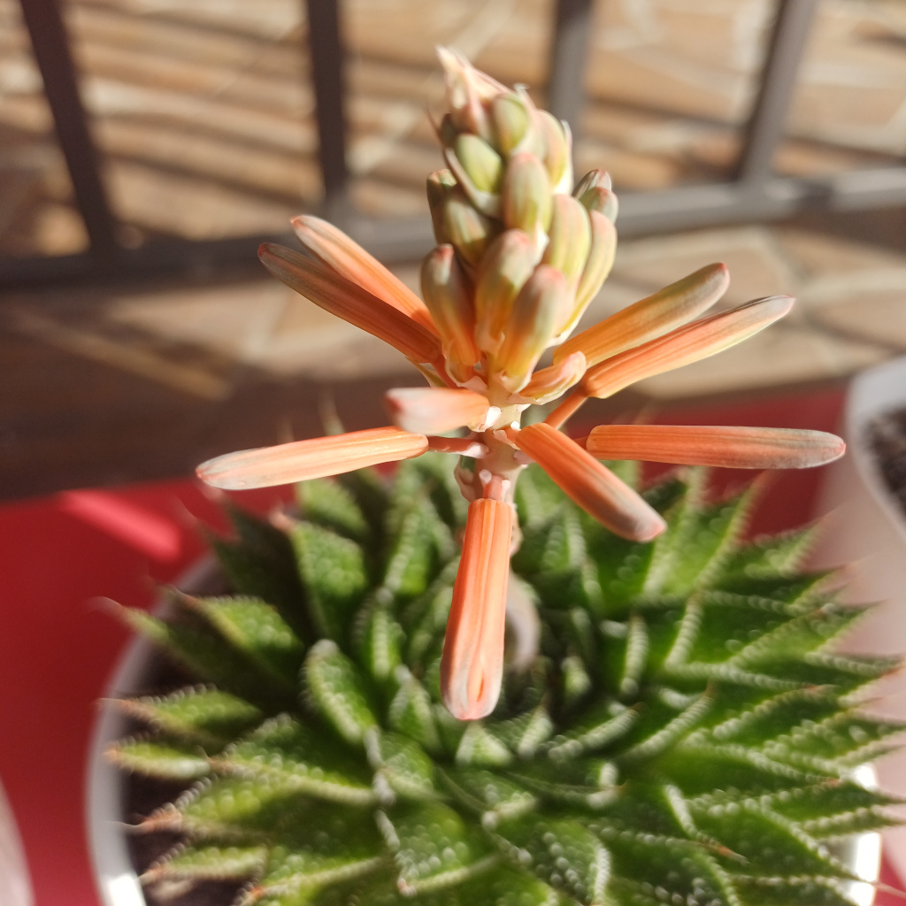
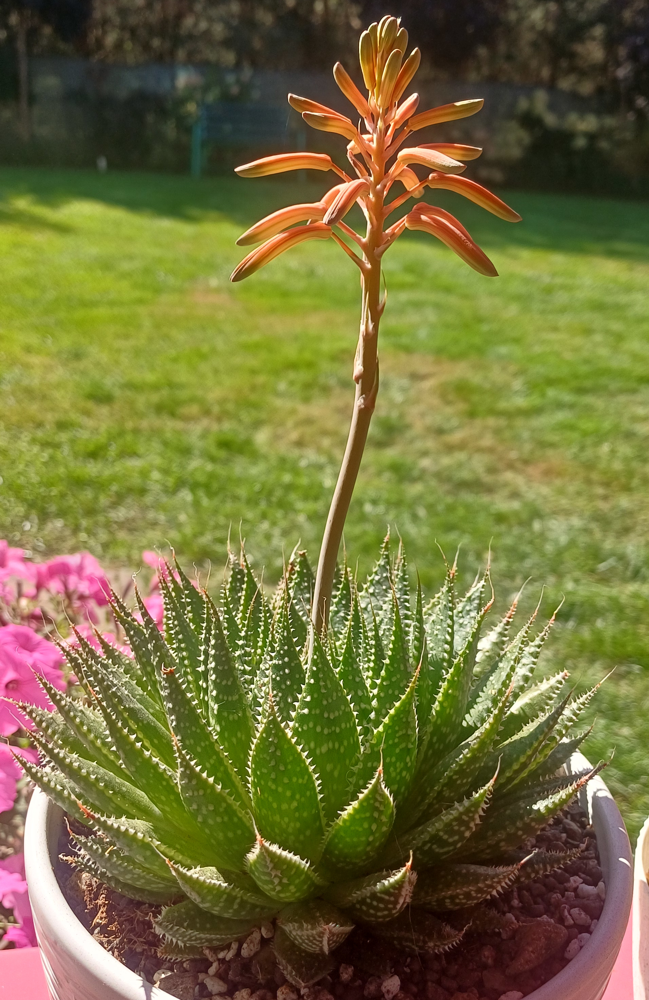

Nazwa zwyczajowa: aloes koronkowy / aloes lampowy
Rodzina: Asphodelaceae
🌍 Występowanie
Naturalnie występuje w południowej Afryce – głównie w Lesotho, RPA (Karoo, KwaZulu-Natal, Eastern Cape). Rośnie na suchych równinach, skalistych zboczach i chłodnych górskich terenach.
🌱 Opis morfologiczny
- Kształt: niska rozeta z mięsistych, trójkątnych liści
- Wysokość: do 20 cm; średnica rozety do 30 cm
- Liście: ciemnozielone z białymi plamkami, zakończone nitkowatym wyrostkiem
- Brzegi liści: miękkie kolce, drobne włoski
- Kwiatostan: smukła łodyga do 40 cm z rurkowatymi kwiatami
🌸 Kwiaty
- Kolor: koralowo-pomarańczowy
- Kształt: rurkowate, zwisające, zebrane w luźny kwiatostan
- Okres kwitnienia: późne lato do jesieni; kwitnie corocznie przy dobrych warunkach
🍒 Owoce i rozmnażanie
- Owoce: torebki z drobnymi nasionami
- Rozmnażanie: głównie przez odrosty boczne; możliwe także z nasion
🌞 Wymagania uprawowe
- Światło: pełne słońce do lekkiego półcienia
- Podłoże: lekkie, piaszczyste, dobrze przepuszczalne (np. ziemia do kaktusów)
- Wilgotność: niska; podlewać oszczędnie, szczególnie zimą
- Temperatura: toleruje spadki do -7°C; w chłodnym klimacie zalecana uprawa doniczkowa
🏆 Ciekawostki
Choć przez lata klasyfikowana jako Aloe, obecnie zaliczana do osobnego rodzaju Aristaloe ze względu na odmienność genetyczną. Często mylona z Haworthia ze względu na podobny pokrój. Jej kwiaty przyciągają pszczoły i ptaki.
📷 Zdjęcia z prywatnej kolekcji
Prezentowane poniżej fotografie pochodzą z prywatnych zbiorów...

